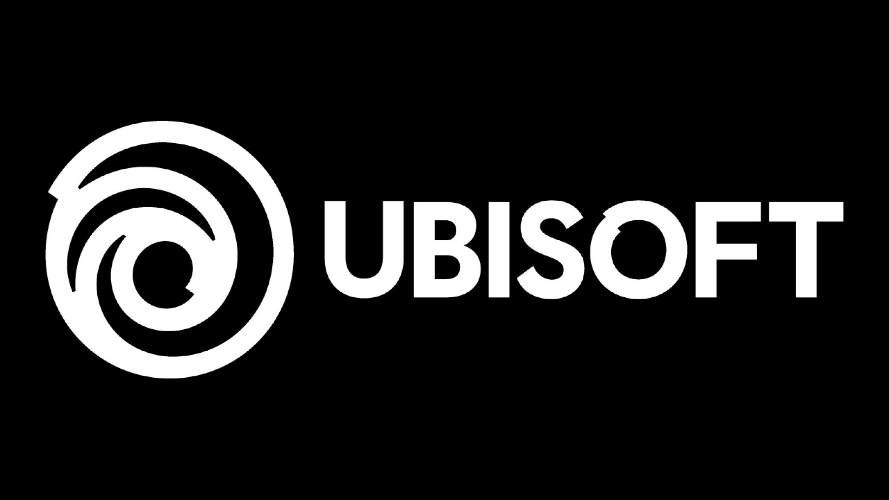

Take-Two: los jugadores ya están listos para pagar $70 USD por juegos Next-Gen
Durante la presentación de los primeros juegos de PlayStation 5 hubo un anuncio que preocupó a los jugadores pues tras la revelación de la versión Next-Gen de NBA 2K21, 2K Sports y Take-Two Interactive anunciaron que el juego costaría $70 USD. De inmediato, se pensó en que habían pasado muchos años desde la última actualización de precio estándar de juegos en la industria, por lo que ese podría ser el precio de los títulos de la nueva generación. Así fue, y en el caso de Take-Two y sus juegos, no habrá marcha atrás.
TAKE-TWO PIENSA QUE LOS JUGADORES ESTÁN LISTOS PARA PAGAR $70 USD POR JUEGO
Durante su participación en la Morgan Stanley Technology, Media & Telecom Conference, Strauss Zelnick, director general de Take-Two Interactive, compañías dueña de 2K y Rockstar Games, entre otros, hablo sobre el polémico aumento de precio de los videojuegos para la nueva generación. De acuerdo con el directivo, lo peor ha pasado ya y, desde la perspectiva de Take-Two, los jugadores ya asimilaron que tendrán que desembolsar $70 USD por los nuevos juegos: "anunciamos un precio de $70 USD para NBA 2K21, nuestra opinión fue que estamos ofreciendo una variedad de experiencias extraordinarias, mucha capacidad de rejugabilidad, y la última vez que hubo un aumento de precio de primera línea en los EUA fue en 2005, 2006, por lo que creemos que los consumidores están listos para eso".
Posteriormente, el directivo señaló que si bien no pueden confirmar que ese será el precio para todos los juegos que se lancen por su parte, Take-Two considera que brindan grandes experiencias de juego, por lo que los $70 USD se justificarían sin problema: "no hemos dicho nada sobre el precio de otros títulos hasta ahora, y tendemos a hacer anuncios título por título, pero creo que nuestra opinión es ofrecer siempre más valor de lo que cobramos, asegurarnos de que el consumidor tenga la experiencia y la experiencia de pagar por ello, siendo ambas positivas. Por lo tanto, siempre queremos asegurarnos de que los consumidores sientan que ofrecemos mucho más de lo que pedimos a cambio, y eso también se aplica a nuestro gasto de consumo actual".
Fuente: levelup